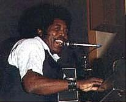
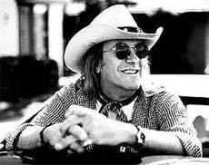

(события - объективно, толкования - сердцу не прикажешь)
1999 |
ноябрь-декабрь |
|
 |
Да, "Большой Лось" Уокер - не самое громкое в блюзе имя. Этот певец-пианист чикагской послевоенной школы - из тех незнаменитых, кто составляет соль жанра; один из тех, кто сохранял традиции изначального мультиритмичного блюза. Он не вколачивал ритм в кандалы 4х4. Ноты под его пальцами пульсировали, каждая - словно в своем ритме. Не будучи виртуозом, он создавал объемность игры без суеты, многомерность более естественную, чем навороты скоростнтых пассажей... Такая многопульсация делает блюз истинным отражением жизни, ведь каждый миг много-много сердец стучат свое, живя в одном времени; слышать этот вольный метроном умели мастера такой жизненной закалки, как у Джона "Биг Муза" Уокера. Нутряное ощущение многоритмичности и ни-мажорного/ни-минорного, а блюзового лада - уходят из блюза вместе с теми, для кого блюз был первой колыбельной... |
Не стоит ходить на UBL - нет там ничего.
Дискография Джона "Биг Музы"есть на AMG http://www.allmusic.com/ попробуйте Johnny Big Moose Walker - только год рождения шибочно указан.
1994 Walker, Big Moose Swear to Tell the Truth, альбом 1984 года, который фирма Evidance переиздала на CD, добавив пять бонус-треков. Сэмплы из альбома "Blue Love" можно послушать в RealAudio на CDNow:
NB! В самостоятельном поиске не путайте с новым Джоном Биг Музом Уокером (http://www.spinoutrecords.com/bands/walker/johnwalker.htm ), который жив, бел и гитарист.
 |
На протяжении полувека это имя было в центре техасской музыкальной сцены. Дуг Сэм был одним из ярчайших ее представителей. Организатор "The Sir Douglas Quintet" и удостоенной "Грэмми" группы "TEXAS TORNADOS", он не придерживался строгих стилевых рамок, предпочитая составлять собственную музыкальную смесь из множества составляющих. Но блюзовый ингредиент в этой смеси всегда был хорошо заметен. Свою трактовку техасской блюза, котороый способен поглотитьи переварить любые стилевые приемы он представил в альбоме с программным названием "The Last Great Texas Blues Band" - "Последний великий техасский блюзбэнд". Музыка Дуга Сэма была великолепно-остроумна по форме и зажигательно-жизнелюбива по наполнению. |
"Кто есть кто": The Texas Tornados, The Sir Douglas Quintet, The Last Great Texas Blues Band
Далее в сети:
Статья из "Виниловый турист" переведена в сокращении для "Кто Есть Кто"-"Блюз.Ру". Полный вариант со множеством дальнейших ссылок здесь: The Vinyl Tourist Website http://catalog.com/arts/sdq_hist.htm
Выступление группы Доуга Сэма на блюз-фестивале в Нутоддене 1997 года: http://anart.no/~ebs/fest/arti/doug.html
Мемориальная страница с воспоминаниями друзей и почитателей, включая рекламную листовочку 1955г. на выступление 12-летнего "Маленького Дуга": http://members.aol.com/sirdoug/index.html
|
В нынешнем году откябрьские праздники были отмечены первым в Москве международным блюз-фестивалем... Точнее - фестивалем американского блюза. В нем приняли участие отличные музыканты, но не первой величины в блюзе вообще и фактически малоизвестные в России. Огромный успех фестиваля, оказавшийся неожиданным для всех, включая его устроителей, демонстрирует в первую очередь то, насколько оголодал московский народ на настоящий блюз. |
О выступлении КРИСА ТОМАСА КИНГА, БОББИ РАША и ЭДДИ "Зе ЧИФА" КЛИАВАТЕРА и их интервью.
"BLUESPOWER": http://www.bluepower.com/ - нэт-блюз-шоу. Несколько блюз-новостей на титульной странице и собственно блюз-"радио"-программы в ra. Из гостей, которых принимал "Блюпауэр", стоит выделить отца британского блюза Джэона Мэйалла и бас-гитариста и тубиста Фрибо. Первый в особых представлениях не нуждается; послушать его интревью о блюзе и о жизне в блюзе в под общеизвестные записи "Блюзбрейкерз" и менее известных новейшие работы (включая дуэт с Мэгги Мэйалл) - будет интересно любому из почитателей жанра. Фрибо - фигура менее общеизвестная, но потому для тонких знатоков едва ли не более любопытная: бас-гитарист, контрабассист, тубист (т.е. играет на бассовой трубе под названием "туба"), аранжировщик и знаток аккустического блюза. В начале карьеры он был преданным сайдменом Бонни Райт и записал с ней ее первые действительно блюзовые альбомы. С тех пор работал с лучшими из лучших в блюзе: ROY BUCHANAN, BUDDY GUY, ARTHUR(BIG BOY) CRUDDUP, MUDDY WATERS, and MISSISSIPPI FRED MACDOWELL, и с тем же Джоном Мэйэллом. Интервью с ним сопровождают, кроме треков из нового альбома Фрибо, записи Томми Кастро и даже "Прокол Харум", в которых он так же принимал участие.
это для тех, кто слушает. Для тех
кто читает - сайт Ziggy's
Blues: http://www.city-net.com/~davidsr/ziggy.htm
- журналиста David S. Rotenstein.
Собственно, и посмотреть там тоже есть на
что, хотя его фотографии - весьма "любительского"
качества, так, "на память". Зато
почитать! - список обинтервьюированных им
впечатляет: Tabby Thomas, Charlie
Musselwhite, John Hammond jr., John
Campbell, Lil' Ed Williams, Luther
Allison, Bob Margolin, Roy
Book Binder, Saffire Blues Women, Sugar Blue,
John Lee Hooker,
Koko Taylor, Little Charley Baty,
David "Honeyboy" Edwards, Tinlsey
Ellis, H-Bomb Ferguson, Lazy Lester,
B.B. King, Johnny
"Clyde" Copeland, Kenny
Neal, C.J. Chenier, Chuck
Leavell, ZZ Top, Graham Nash, Carlos
Santana, Mark O'Connor...
...Один маленький недостаток - самое свежее
интервью - от 1995г. Ну, видимо для
опнародования более свежих материалов из
архива Ротенштейна еще не вышел срок
давности.
Вот уже три месяца, как на сервере популярного сетевого музобозревателя Вилли П. (http://www.willy.msk.ru) появилась нужная нам постоянная рубрика BluesDom. Точнее, эта рубрика является частью ежемесячной рассылки под названием Overground Music Newsletter, на которую можно подписаться с вышеуказанного сервера, и которая посвящена, если это формулировать коротко, настоящей музыке прошлого и настоящего. В рамках рубрики можно прочитать анонсы на блюзовые CD-новинки и материалы, посвященные знаменательным датам и личностям из вековой истории блюза. Ведет рубрику наш человек, хозяин сайта “Mean Black Cat Blues – Блюзовая архаика” (http://www.blues.ru/BlackCat) Михаил nECKAPb, который, при его известной привязанности к основному объекту его изысканий - блюзу довоенному, честно старается не забывать и сегодняшний день этого древнего жанра.
Бывшие новости |
Январь-Февраль 1999 |
Март 1999 |
Ноябрь-Декабрь 1999
Январь 2000 |
Февраль 2000 |
Март 2000 |
Апрель 2000